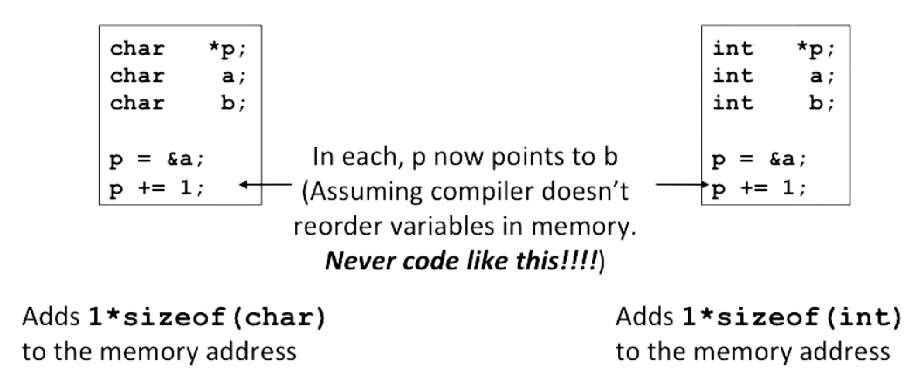
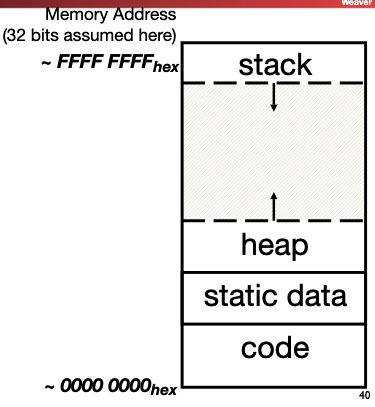
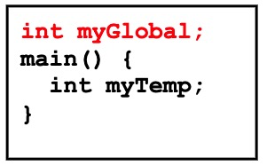
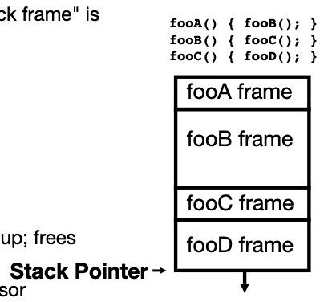
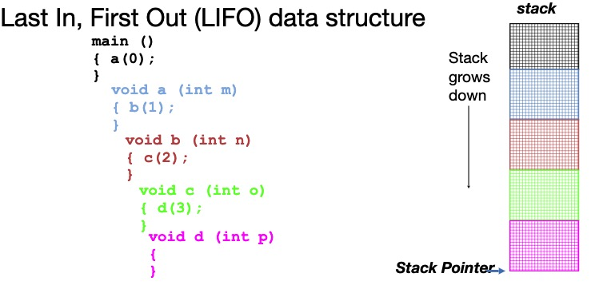
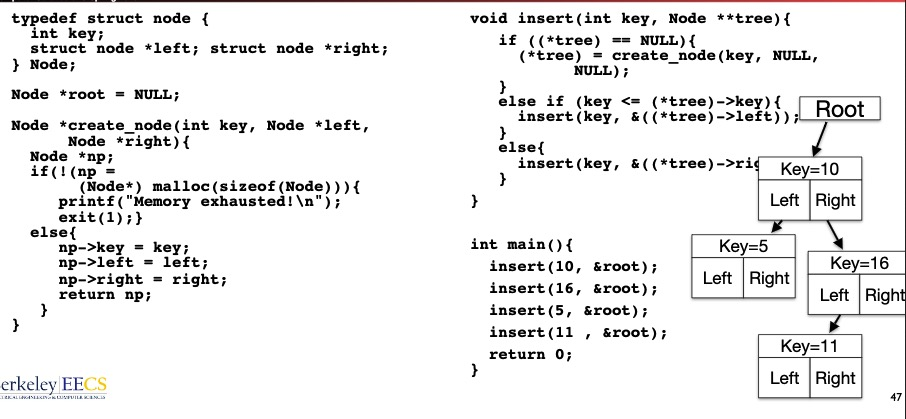

1. C vs. Java vs. Python
- Integers
- true or false
- Java and C pass parameters by value
2. C Arrays
- Declaration:
int ar[2];— just a block of memoryint ar[] = {1, 2}— declares and initializes a 2-element integer array
2.1 C Arrays are very Primitive
- An array in C does not know its own length, and its bounds are not checked
- Consequences: we can accidentally access off end of an array
- Consequences: we must pass the array and its size to any procedure that is going to manipulate it
- Segmentation Fault and Bus Error
2.2 Use Defined Constants
Bad pattern:
int i, ar[10]; for (i = 0; i < 10; i++) {...}Better pattern:
const int ARRAY_SIZE = 10; int i, a[ARRAY_SIZE]; for (i = 0; i < ARRAY_SIZE; i++) {...}
3. C Strings
String in C is just an array of characters
char string[] = "abc";How do we know how long a string is?
- Last character is followed by a 0 byte (aka “null terminator”)
int strlen(char s[]) { int n = 0; while (s[n] != 0) n++; return n; }
4. Pointers
- Pointers are used to point to any kind of data(
int,char,struct, etc) - C knows how to increment pointers
void *is a type that can point to anything (generic point)- use
void *can help avoid program bugs, security issues, and other bad things - we can even have pointers to functions:
int (* fn)(void *, void *) = &foofnis a function that accepts twovoid *pointers and returns anintand is initially pointing to the functionfoo(*fn)(x, y)will call the function
4.1 More C Pointer dangers
- declaring a pointer just allocates space to hold the pointer—does not allocate thing being pointed to.
- Local variables in C are not initialized, they may contain anything
4.2 Pointer and Structures
typedef struct {
int x;
int y;
} Point;
Point p1;
Point p2;
Point *paddr;
/* arrow notation, the two below are equal */
int h = paddr->x;
int h = (*paddr).x;
/* structure assignment */
p2 = p1;Note, C stucture assignment is not a “deep copy”. All members are copied, but not things pointed to by members.
4.3 Pointers in C
- Why use pointers?
- If we want to pass a large struct or array, it’s easier/faster to pass a pointer
- want to modify an object
- In general, pointers allow cleaner, more compact code
- What are the drawbacks?
- most problematic with dynamic memory management
- dangling reference and memory leak
4.4 Pointing to Differenct Size Objects
- Modern machines are “byte-addressable”
- hardware’s memory composed of 8-bit storage cells, each has a unique address
- A C pointer is just abstracted memory address
- Type declatation tells compiler how many bytes to fetch on each access through pointer
- E.g., 32-bit integer stored in 4 consecutive 8-bit bytes
4.5 Array Name/ Pointer Duality
- Key Concept: Array variable is a “pointer” to the first ($0^{th}$) element
- So, array variables almost identical to pointers
char *stringandchar string[]are nearly identical declarations- Differ in subtle ways: incrementing, declaration of filled arrays
- Consequences:
aris an array variable but looks like a pointerar[0]is the same as*arar[2]is the same as*(ar+2)- Can use pointer arithmetic to conveniently access arrays
- An array is passed to a function as a pointer, but the array size is lost
int foo(int array[], unsigned int size)
{
...array[size-1]...;
// It will be 8, because array is a pointer
printf("%d\n", sizeof(array));
}
int main(void)
{
int a[10], b[5];
...foo(a, 10)...foo(b, 5);
// It will be 40
printf("%d\n", sizeof(a));
}4.6 Changing a Pointer Argument
- Solution: Pass a pointer to a pointer, declared as
**h
void inc_ptr(int **h)
{
*h = *h + 1;
}
int A[3] = {50, 60, 70};
int *q = A;
inc_ptr(&q);
printf("*q = %d", *q);4.7 sizeof() operator
- sizeof(type) returns number of bytes in object
- By definition,
sizeof(char) == 1 - Can take any type of data —
sizeof(arr),sizeof(structtype)
4.8 Pointer arithmetic
pointer + number, pointer - number.

4.9 Arrays and Structures and Pointers
typedef struct bar {
char *a; /* A pointer to a character */
char b[18] /* A statically sized array of characters */
} Bar;
Bar *b = (Bar *) malloc(sizeof(struct bar));
b->a = malloc(sizeof(char) * 24);It will require 24 bits on a 32b architecture for the structure:
- 4 bytes for a (pointer
- 18 bytes for b (18 chars
- 2 bytes padding (needed to align
4.10 Concise strlen()
int strlen(char *s)
{
char *p = s;
while (*p++)
; /* Null body of while */
return p - s - 1;
}5. Arguments in main()
To get arguments to the main function, use:
int main(int argc, char *argv[])What does this mean?
argccontains the number of strings on the command line, hereargcis 2:unix% sort myFile
argvis a pointer to an array containing the arguments as strings
Example:
foo hello 87 "bar baz"argc = 4; argv[0] = "foo"; argv[1] = "hello"; argv[2] = "87"; argv[3] = "bar baz";
6. C Memory Management
Programs’s address space contains 4 regions:
- stack: local variables inside functions, grows downward
- heap: space requested for dynamic data via
malloc()resizes dynamically, grows upward - static data: variables declared outside functions, does not grow or shrink. Loaded when program starts, can be modified.
- code: loaded when program starts, does not change

6.1 Where are variables allocated?
If declared outside a function, allocated in “static” storage
If declared inside function, allocated on the “stack” and freed when function returns
main()is treated like a function
For both of these types of memory, the management is automatic

6.2 The stack
- Every time a function is called, a new “stack frame” is allocated on the stack
- Stack frame includes:
- Return address (who called me?
- arguments
- space for local variables
- Stack frames uses contiguous blocks of memory; stack pointer indicates start of stack frame
- When function ends, stack pointer moves up; free memory for future stack frames


6.3 Managing the Heap
C supports functions for heap management
malloc(): allocate a block of uninitialized memorycalloc(): allcoate a block of zeroed memoryfree(): free previously allocated block of memoryrealloc(): change size of previously allocated block
6.4 Malloc()
void *malloc(size_t n):- allocate a block of uninitialized memory
- subsequent calls probably will not yield adjacent blocks
nis an integer, indicating size of requested memory block in bytessize_tis an unsigned integer type big enough to “count” memory bytes- Returns
void*pointer;NULLreturn indicates no more memory (check for it! - additional control information (including size) stored in the heap for each allocated block
Examples:
int *ip; /* "cast" operation changes type of a variable. Here changes (void *) to (int *) */ ip = (int *) malloc(sizeof(int)); typdef struct {...} TreeNode; TreeNode *tp = (TreeNode *) malloc(sizeof(TreeNode));
free()
void free(void *p):pis a pointer containing the address originally returned bymalloc()
Examples:
int *ip; ip = (int *) malloc(sizeof(int)); ... free((void*) ip); typdef struct {...} TreeNode; TreeNode *tp = (TreeNode *) malloc(sizeof(TreeNode)); ... free((void*) tp)

6.5 Observations
- Code, Static storage are easy: they never grow or shrink
- Stack space is relatively easy: stack frames are created and destroyed in LIFO order
- Managing the heap is tricky: memory can be allocated/deallocated at any time
- If you forget to deallocate memory: “Memory Leak”. Your program will eventually run out of memory.
- If you call free twice on the same memory: “Double Free”. Possible crash or exploitable vulnerability
- If you use data after calling free: “Use after free”. Possible crash or exploitable vulnerability
6.6 When Memory Goes Bad
Writing off the end of arrays:
int *foo = (int *) malloc(sizeof(int) * 100); int i; ... for (i = 0; i <= 100; i++) { foo[i] = 0; }- Corrupts other parts of the program, including internal C data
- May cause crashes later
Returning pointers into the stack:
It is catastrophically bad to return a pointer to something in the stack.
char* foo() { char foo[50]; ... return foo; }The memory will be overwritten when other functions are called, so your data no longer exists.
use after free:
- Reads after the free maybe corrupted, as something else takse over that memory. Your program may get wrong info.
- writes corrupt other data, your program may crashes later.
Forget realloc can move data:
when you realloc it can copy data
struct foo *f = malloc(sizeof(struct foo) * 10); ... struct foo *g = f; ... f = realloc(sizeof(struct foo) * 20);result is g may now point to invalid memory. Reads may be corrupted and writes may corrupt other pieces of memory.
Free the wrong stuff:
- If you
free()something never malloc’ed(), malloc/free may get confused
- If you
Double free:
6.7 Valgrind
It’s a tool that we use to debug C code.
Valgrind slows down your program a little bit, but it adds a tons of checks designed to catch most memory errors.